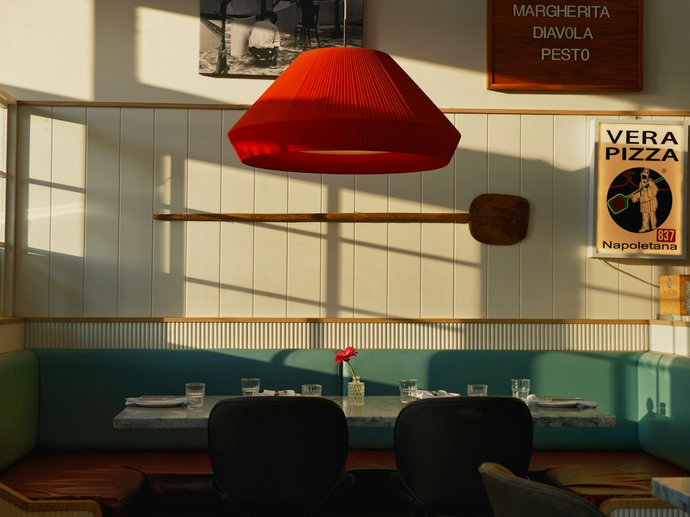

Automazione per Ristoratori: Supera il Gap Competitivo con Locanda Digitale

Come l'automazione di Locanda Digitale ridefinisce il successo per Ristoratori, Chef e Titolari di Trattorie, Pizzerie Gourmet e Agriturismi
- I menu cartacei di solo testo rappresentano un ostacolo al coinvolgimento del cliente e alla comunicazione della qualità in ambito food service.
- Le difficoltà di promozione sui social e i costi elevati per produzioni video consolidate creano un gap competitivo crescente.
- Locanda Digitale, con la sua suite AI per ristoratori, offre soluzioni innovative e accessibili: video 3D verticali a 60 FPS dai piatti reali e digitalizzazione del menu con QR Code.
Analisi approfondita della notizia e delle implicazioni operative
Nel mondo della ristorazione, la presentazione del prodotto non si limita più all’esperienza dal vivo, ma si estende inevitabilmente alla comunicazione digitale. La notizia di settore evidenzia un divario tra gli esercizi che ancora affidano la loro immagine e il loro marketing a menu cartacei tradizionali e chi, invece, utilizza soluzioni innovative di digitalizzazione e automazione. Questo trend si traduce in un vero e proprio gap operativo, che impatta direttamente sull’attrattività del locale e sul tasso di fidelizzazione dei clienti.
I menu cartacei di solo testo, spesso privi di fotografie di qualità e di elementi grafici coinvolgenti, risultano estremamente limitanti in un contesto dove i consumatori si aspettano presentazioni visive accattivanti, soprattutto sui canali social. Inoltre, la produzione di contenuti video professionali si scontra con costi proibitivi per molti ristoratori indipendenti, rendendo difficoltoso un aggiornamento efficace del materiale promozionale.
Le conseguenze e i costi di non agire
Mantenere un approccio tradizionale comporta evidenti svantaggi competitivi. Il menu cartaceo standard appare spesso ignorato dai clienti, sia in sala sia durante la fase decisionale a casa o online. La mancanza di supporti visivi investe negativamente sull’immagine percepita del locale e sulla scelta dei piatti, penalizzando anche il posizionamento sui social, canale ormai imprescindibile per il marketing di zona e la costruzione di brand identity.
Inoltre, la necessità di affidarsi a videomaker esterni per realizzare contenuti promozionali di qualità induce spese ricorrenti e difficilmente sostenibili per molte realtà legate a trattorie, pizzerie gourmet o agriturismi, dove il budget marketing è spesso limitato o concentrato su altre priorità operative.
Tali limitazioni si traducono in una minore visibilità online, minori prenotazioni e un’incapacità di differenziarsi efficacemente nel mercato locale altamente competitivo.
Come Locanda Digitale risolve il problema
Locanda Digitale si presenta come una suite AI dedicata esclusivamente alla ristorazione, pensata per superare queste barriere operative con un approccio semplice, economicamente accessibile e tecnologicamente all’avanguardia. Il sistema consente di generare automaticamente spot video 3D verticali (formato 9:16) a 60 FPS, partendo dalle fotografie reali dei piatti, eliminando la necessità di ingenti investimenti in produzione video professionale.
In parallelo, la digitalizzazione del menu cartaceo è resa semplice e immediata: viene creata una versione digitale del menu arricchita da immagini HD attraenti e distribuita tramite QR Code posizionati direttamente al tavolo. Questa soluzione trasforma il tradizionale menu di testo in un’esperienza interattiva e multisensoriale, facilitando la scelta del cliente e migliorando la percezione qualitativa del locale.
Il modello di pricing è trasparente e conveniente: con un pagamento una tantum è possibile scegliere tra il pacchetto Social 3D Starter a 79 euro oppure la versione più completa Visual Menu Pro a 149 euro, senza alcun abbonamento o costi ricorrenti, perfetto per chi desidera un upgrade tecnologico senza vincoli.
| Aspetto | Gestione Tradizionale | Con Locanda Digitale |
|---|---|---|
| Presentazione del menu | Solo testo, senza immagini o fotografie di qualità | Menu digitale con fotografie HD integrate e QR Code al tavolo |
| Promozione social | Limitata o assente, costi elevati per produzione video | Video 3D verticali ai 60 FPS creati automaticamente dall’AI a partire da foto reali |
| Costi di implementazione | Spese frequenti e di alto budget per marketing tradizionale e professionale | Pagamenti una tantum senza abbonamenti, costi contenuti e trasparenti |
| Aggiornamenti | Lenti e dispendiosi (stampa menù, nuovi video) | Immediate modifiche online e nuovi video generati automaticamente |
💡 Ti è stato utile questo approfondimento?
Condividilo con un collega o un amico del settore Ristoratori, Chef, Titolari di Trattorie, Pizzerie Gourmet e Agriturismi a cui potrebbe interessare!
FAQ - Domande frequenti
1. Posso usare Locanda Digitale senza competenze tecniche avanzate?
Assolutamente sì. L’interfaccia è progettata per essere intuitiva e guidata, pensata per ristoratori con qualsiasi livello di esperienza digitale.
2. Come posso aggiornare il menu digitale o i video in caso di nuovi piatti?
È possibile caricare nuove fotografie e aggiornare il menu online in pochi click. I video vengono rigenerati automaticamente dall’AI.
3. Ci sono costi ricorrenti o abbonamenti?
No. L’offerta prevede un pagamento unico, con due opzioni di pacchetto in base alle esigenze, senza costi aggiuntivi o vincoli contrattuali.
Inizia Subito
Social 3D Starter a €79 una tantum o Visual Menu Pro a €149. Nessun abbonamento.
Fonti Ufficiali e Risorse Esterne
Scopri l'Intelligenza Artificiale per la tua attività
Ottimizza i processi e aumenta le vendite con le soluzioni B2B di RM Studio.
Scopri Locanda Digitale